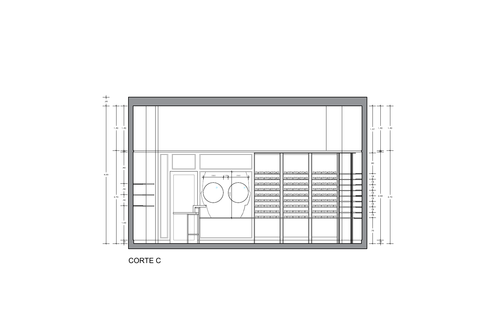
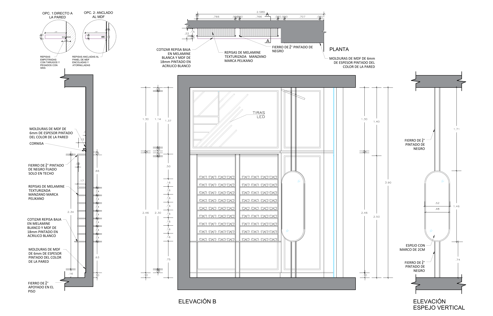

02 · Proyecto retail
TFOP
The Friend of Pablo — showroom de óptica boutique con identidad espacial propia, paleta verde salvia y exhibición curada del producto.

Sobre el proyecto
Diseño arquitectónico para una óptica boutique, desde la conceptualización del espacio hasta la coordinación de la obra y la supervisión final. La propuesta combina una paleta de verdes salvia con elementos minimalistas en negro y metal, generando una atmósfera de galería donde los productos se exhiben como piezas curadas.
El proyecto se ejecutó como parte del equipo de MPW Arquitectura, incluyendo desarrollo de planos técnicos, especificaciones de materiales, iluminación dirigida y supervisión de carpintería a medida.
Galería

Planos técnicos

